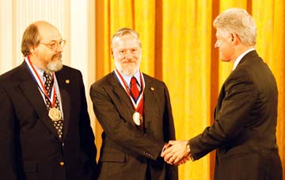

On April 26-27 1999, Ken Thompson and I were among those receiving the 1998 National Medal of Technology, together with those awarded the National Medal of Science, at ceremonies culminating at the White House. A great honor for us and Bell Labs, and a lot of fun, even if we had to behave and wear clothing outside our usual custom. This is an account of the events.
The citations and whatnot for all of us are available from the Department of Commerce and National Science Foundation.
The first hint that something was going on was last fall (late 1998), when Ken and I each got a letter with a form from the government requesting full name, address, date of birth, place of birth, Social Security number, and signature giving permission for an FBI name check. Bill Coughran (boss at the time) confirmed the suspicion that something was in the works, without going into details.
The next communication was a mail message (Dec 1) via Paula Cannata:
The secretary of commerce called to tell you about an award.
He will try back at 3:30pm.
Paula
For sure, Secretary Daley was successful on his callback. Over the next few days, Bill and Dawn Gindel admitted to the amount of preparation that had been done, with Brian Kernighan, to compile the application. We began to get faxes and e-mail with details. The first version of the press release from Commerce had my first name as Daniel, but this got fixed before it went out.
Over the next few months we got various communications from Allison Rosenberg, the woman who runs the NMT program within the Commerce Department. The first word was that the ceremony would be "early 1999" but by January she was saying "looking at the first two weeks in March." I called her about some detail of guests, and in apology for not having a firm date, she volunteered that "that business in the Senate is complicating things." Eventually things were scheduled for 26-27 April.
The guest issue was interesting. The first word was that each medalist could bring, probably, four guests, but depending on space, that could shrink. In any event we had to supply the names, addresses, DOB, POB, SS# of all concerned. It appeared that all three of my sibs and their spouses were not merely interested in attending, but ready to fight for the opportunity. Ken would bring his wife Bonnie of course, and he took the initiative to invite Bill Coughran; as a team, it looked like we were under the tentative limit. As things worked out, except for one final point that occurred just at the event, I didn't have to triage the family.
So: our own group included Ken, Bonnie, Bill Coughran and me, plus my sibs Lynn, John, and Bill R with respective spouses Chris Potter, Jane Roessner, and Andrea Barthello. I had naively thought that Lynn and Chris, for example, might be diffident about coming from all the way from England, but this was very naive indeed. The relatives were much delighted at sharing such an event, and from seeing and meeting the families of the others, this effect isn't unusual. We were surrounded by a collection of noticeably energized people.
Dennis,
A gentleman called from the whitehouse stating that William Ritchie
has NOT RSVP'd for Tuesday and that if he does not "he will be
standing outside". This is the number he may call to RSVP to:
202-456-XXXX.
So I called brother Bill on his cell phone; he was traveling in Florida. The phone was off, but his voicemail accepted the message. I also called the White House social office, which seemed to accept my proxy RSVP, and Bill's wife Andrea also called from her trip to Chicago after indirectly hearing this message. Andrea had in fact RSVPed long before, but somehow it didn't register. In any event, when the time came, we were all on the list.
Dealing with this event itself, and handling the social aspects of interacting with the other medalists and with the very bright and charming kids from the Banneker High School in DC who formally escorted us, was more than enough. The speeches at the event were pretty banal; A video segment prepared about us and the each of the others seemed to work at the time. Our bit had some old-movie material about A. G. Bell, flash-cut shots about Bell Labs, and some very earnest and slightly uncomfortable video of Ken and me when we were considerably younger. During the introduction to the ceremonial part, Secretary Daley made some hard-to-interpret comparisons between the building with its impressive columns, which are built of bricks inside, and the work of the medalists. It started by comparing how high a column could be made with one brick per cardiac procedure performed by Cooley, but became increasingly forced. But after all, this was just an after-dinner speech.
This event was the chance to get to see Ken and me in most unaccustomed regalia. The family took advantage of the opportunity to use their cameras.
The last event of Monday was last-minute. Patrick Regan (Lucent PR guy) had told me that Lucent was helping to sponsor a concert by Wynton Marsalis at the Kennedy Center, at the same time as the Gala Banquet. He tried to inveigle me into going to that instead of the banquet. Reason prevailed: it would be most appropriate to go to the banquet. This impression was reinforced when several mentioned disapprovingly that Bill Gates had stiffed the banquet, maybe even the whole thing, when he received the award some years ago. This must have been before he got married.
But there was going to be a reception after the concert, so during the Monday luncheon Patrick worked harder at making arrangements. Everyone in our group decided that doing Marsalis might be a good capper to the evening, so Bonnie and my family called his bluff: how are we to get from the National Building Museum at 10:15 PM to the Kennedy Center and then back to respective hotels and my brother's home in Alexandria? How about providing a limo? At first Patrick worried that this would bust his budget for the year, but after a flurry of conversations on borrowed cell-phones, total transportation for the evening was arranged. Cars pulled up in front of my brother's house just as the last of the cufflinks were being inserted in rental tux-shirts, and stayed with us to the end.
The Marsalis reception featured jazz from some highly talented kids from another DC magnet school. My group was tired enough to leave just before Marsalis came back to jam with the kids.
Tuesday: In the morning, a not-memorable press conference, again at the Commerce building; there were not many press people there and there was really only one question asked (which I don't remember) and the time was spent mostly by the Science medalists riding hobby horses among themselves, about public underappreciation of science, problems of the educational system, the fact that many/most of the good young scientists in the US are immigrants (this tempered by the observation that most will become citizens), the prevalence of creationism and crystal-mysticism, and the faults of journalists and scientists themselves in not combatting all the problems. Ken tried to change the tone by observing that one of the problems in the CS area was not underappreciation but the "eating the seed corn" phenomenon in which smart people are siphoned off too early from academia and grad school, but no one picked this up. After the press thing, I met the family, we had lunch at a convenient restaurant, and set off for the White House.
Tuesday afternoon had the Big Event, the actual presentation by the Prez.
The medalists didn't have a lot of time to chat during the various events, because there were constantly directions about what was going to happen, being told to line up for a photo, and generally dealing with being in public. E.g. during the Banquet preparation, how does one divide time among the Bristol-Myers Squibb guy who confides about Rich McGinn, the photographer who wants a line-up, the Banneker School kids, the family who want photos for themselves?
The English relatives (jokingly) threatened to hiss or make some demonstration about the Monsanto award; prominent in their citation is the contribution to genetically modified crops, currently a noisy topic in Europe and in US-European trade issues. I wonder what kinds of discussion went on in the selection committee about this. In the event, no pickets or hisses were evident.
I did manage to connect a bit with Cathleen Morawetz and John Bahcall.
Cooley somehow seemed to be most prominent--among all the winners, he's certainly the best known to the public, though he probably mutters a bit about confusion with Michael DeBakey and Christiaan Barnard among heart doctors. He was visible in the whole event not only by his own fame, but because of his energetic and attractive retinue: his wife and four daughters. They are all blonde, independent, intelligent, personable, and Texan, and were observed interchanging business cards with my relatives. Ken managed to collect a story from Cooley himself, involving a pig used for practice surgery during his training days: the key lines in it were:
Get the adrenalin!
Get the defibrillator!
Uh... Get the barbeque sauce!
I bet this is one of his stock stories. During the SciAm luncheon, Rennie asked him on-mike about the possibility of a genuinely useful mechanical heart, and he was dubious (the heart is an amazing organ). I tried to ask him about xenotransplants, as from a pig, but it was across Ken on the dais, and either the question or the answer was cut off by having to do some duty.
The next crunch time came when the security guy checking our ID said that the medalists and their spouses would come in first, other guests to follow. Lacking a spouse, I made a quick decision that my sister Lynn was the one to select for the VIP version of the event. (I may have to deal with family consequences from this choice.) After the name check and airport-style X-ray machine and metal detector, Lynn and I, with the other favored folk, got a quick tour of the White House before being shown the layout of the venue of the ceremony, then going to the Blue Room of the White House to get lined up for the formal entrance.
The lineup was complicated because of the ordering of the S and T people and because we had to enter the East Room, where the ceremony would take place, so as not to stumble over each other in sitting down. The order was: Science on the right, alphabetically (easy); Technology on the left, first the individual (Cooley) then the smaller team (us), the larger team of 4, the two company CEOs. The complication was that groups of 6 in each line had to be flipped in order to file into the seats properly. The social staff and military people coped OK.
Finally we were all arranged properly around the edge of the Blue Room (the White House has more oval rooms than you would believe). One peculiarity was noticed: in the earlier events, everyone was addressed as "Doctor" irrespective of degrees held. The White House people in the Blue Room said "Doctor" to the Science people and "Mister" to the Technology people. At some point late in the arrangement, Mrs. Cooley pointed to her husband and said "It's Doctor Cooley, please!"
Rush Holt, Congressman from the NJ 12th CD, and the one mentioned by Clinton in his remarks as the only scientist in Congress (he's a physicist), came by to say hello. I thought it was nice that he was invited (or got himself invited) and made this gesture. He's not even from our district.
The President finally entered, shook hands all around. He didn't say anything to Ken or me except maybe a cheery word or so, but he did spend a moment on Bonnie's necklace. Bonnie will have to expound on her perception of this interaction. He did have a few words with some of the others (including Cooley).
After asking an aide "How's this going to be arranged?" or some similar question (one we were still asking ourselves in spite of the instructions), Clinton then retired for a moment. In the minute or so before the action began, Cooley remarked, "He does look quite fit, I think," and he does. Of course Cooley had also remarked to Ken and me the day before, "I see you two use the same barber." Not just a surgeon, a diagnostician.
We all then filed into the East Room without stumbling, sat down and then stood up for the official, Hail-to-the-Chief entrance. People who've seen the video of the event tell me that he checked his fly on entering the room.
The ceremony came off well. Clinton was, not too surprisingly, the only person during the whole two-day affair able to deliver a really good performance in public. But this is his job, after all. (I did notice that he was wearing brown shoes with a gray suit.) You can read what he said at the Whitehouse site [But not any more, as you see if you try to follow the link]. His talk was well-delivered, and he (or his speechwriter) was more convincing and comforting than Secretary Daley in admiring and supporting science and technology while disclaiming personal expertise.
The relatives, like others, were very curious about whether Hillary would make an appearance. There never was a hint that she would, and she didn't.
Two crucial instructions well before the whole thing centered on two points:
RSVP the necessary information about guests into the system, or they won't get into the White House!During the presentation, Don't stand between the President and the photographers--you want your picture to be good!
 We all seem to have managed this, though Ken and I spent a few moments pondering that we, as the first team-of-two, were going to pioneer the exercise of not getting in front of each other. I succeeded at this, as well as generating an especially happy expression in one of the shots. In case you don't recognize us, that's Ken, me, and Clinton L-to-R.
After the ceremony there was a reception in the State Dining Room, without the Prez, but impressive in the catering. This broke up slowly and we drifted out, taking advantage of a WH photographer to get images of us in various places and rooms. I depend on the family to follow up to get these.
As we wandered out, Lynn and I tried to remember what we'd been told about various rooms to instruct the others, we sat in the WH movie theater, we took photos here and there. Late during the exit, we were favored by the sudden appearance of a guy in a grey jumpsuit with SWAT written on the back, and festooned with various gadgetry, who let himself through a door leading to the Jacqueline Kennedy garden. One of my relatives was bold enough to ask whether he was there to give us the tour of the garden. The reply was friendly but very brisk, and happily didn't involve a quick move towards his equipment.
Brother John chose the moment just after the SWAT guy averted his gaze to flash us a view of a stack of paper towels with the Presidential Seal he'd abstracted from the rest room. The White House public rooms don't seem to have many small knick-knacks sitting about on the tables, but somewhere in the Federal Budget there is doubtless an item for Presidential paper towels, and there's no paper detector on the way out.
We finished the day with a walk around outside of the whole White House complex, including observation of Pebble Beach, the gravel place from which TV crews do their stand-up reports. This is inside the fence, but a crew of two with a TV camera and and equipment was sitting on a sidewalk bench outside. The relatives engaged them ("Here to cover the awards?" "No, we're on a G7 story.") They were British. It turned out that the stand-up guy had used Unix and programmed in C in University, but was now in TV and had a different gig.
A satisfying coda to a remarkable experience.